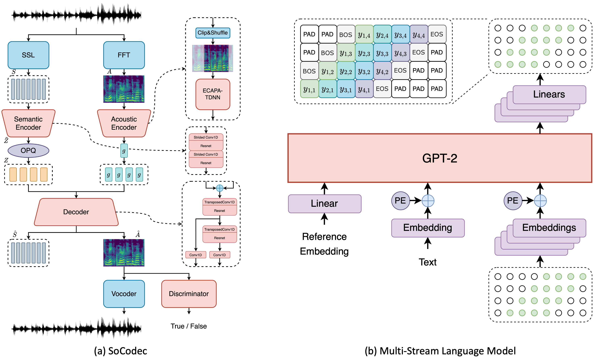

Haohan Guo, Fenglong Xie, Jiawen Kang, Yujia Xiao, Xixin Wu, Helen Meng
The Chinese University of Hong Kong, Hong Kong SAR, China
Xiaohongshu Inc., Shanghai, China
Northwestern Polytechnical University, Xi'an, China
hguo@se.cuhk.edu.hk
[Paper]

The long speech sequence has been troubling language models (LM) based TTS approaches in terms of modeling complexity and efficiency. This work proposes SoCodec, a semantic-ordered multi-stream speech codec, to address this issue. It compresses speech into a shorter, multi-stream discrete semantic sequence with multiple tokens at each frame. Meanwhile, the ordered product quantization is proposed to constrain this sequence into an ordered representation. It can be applied with a multi-stream delayed LM to achieve better autoregressive generation along both time and stream axes in TTS. The experimental result strongly demonstrates the effectiveness of the proposed approach, achieving superior performance over baseline systems even if compressing the frameshift of speech from 20ms to 240ms (12x). The ablation studies further validate the importance of learning the proposed ordered multi-stream semantic representation in pursuing shorter speech sequences for efficient LM-based TTS.